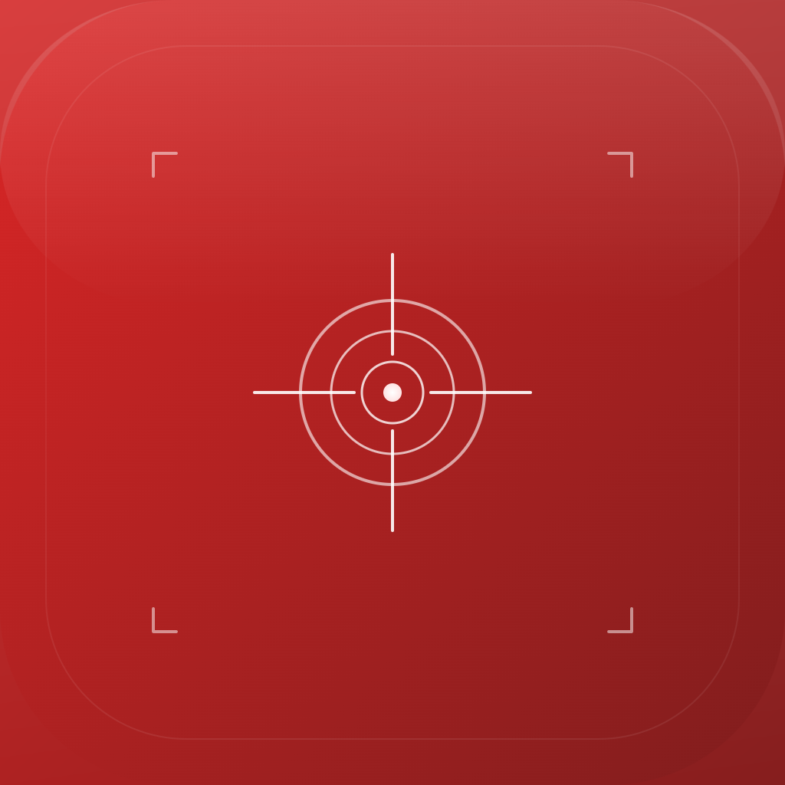

Red Grid MGRS
V2.5 — Pro FeaturesDAGR-class MGRS precision in your pocket. Nine tactical tools, six radio-ready report templates, zero network dependency.
Replace a $2,500 Military Device
AN/PSN-13 DAGR
$2,500+
Military GPS Receiver
Restricted distribution
Red Grid MGRS
Free
Your iPhone
Available to everyone
Shared Capabilities
- ✓ Live MGRS coordinates (4/6/8/10-digit)
- ✓ Waypoint storage
- ✓ Magnetic declination (WMM)
- ✓ Multiple coordinate formats
- ✓ Full offline operation
What MGRS Adds
- + 9 tactical tools
- + 6 radio-ready report templates
- + NATO voice readout
- + Photo geostamp
- + 4 display themes
What Red Grid MGRS Does
MGRS Precision
Live coordinates in 4, 6, 8, or 10-digit MGRS format. 1-meter accuracy. The same grid system used by NATO forces worldwide.
9 Tactical Tools
Back azimuth, dead reckoning, two-point resection, pace count, declination reference, time-distance-speed, sun/moon data, MGRS precision selector, coordinate converter.
6 Report Templates
SALUTE, 9-Line MEDEVAC, SPOT report, ICS 201 briefing, CASEVAC request, CFF fire mission. Pre-formatted for radio transmission.
NATO Voice Readout
Proper phonetic pronunciation of grid coordinates. Shake to speak. Hands-free grid calls with correct NATO digit pronunciation (TREE, FOW-ER, FIFE, NIN-ER).
Photo Geostamp
Burns MGRS coordinates and date-time-group onto photos. Tactical documentation without modifying camera roll originals.
4 Tactical Themes
Red Lens (night vision preservation), NVG Green (NOD compatible), Day White (high-contrast daylight), Blue Force (tactical blue).
Who It's For
Military & Law Enforcement
Land navigation training, patrol reporting, call for fire, MEDEVAC requests. The tools you trained on, in your pocket.
Outdoor Recreation
Backcountry navigation with military-grade precision. Waypoints, bearing/distance, dead reckoning. Works without cell service.
Pricing
- Live MGRS coordinates
- 9 tactical tools
- 6 report templates
- NATO voice readout
- Basic themes
- HUD mode
- Photo geostamp
- Haptic alerts
- All 4 tactical themes
- Support development
Your grid reference, always ready
Download Red Grid MGRS and put DAGR-class precision in your pocket.